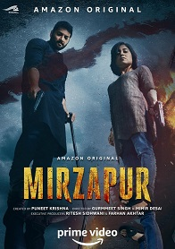
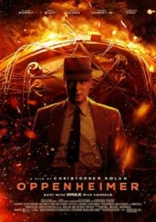
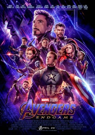
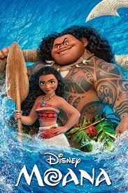
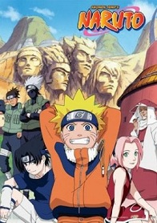
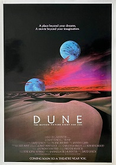
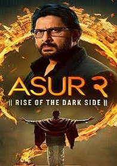

If you enjoy the website, please consider sharing it with your friends. Thank you!

MIRZAPUR
The iron-fisted Akhandanand Tripathi is a millionaire carpet exporter and the mafia don of Mirzapur. His son, Munna, is an unworthy, power-hungry heir who will stop at nothing to inherit his father's legacy. An incident at a wedding procession forces him to cross paths with Ramakant Pandit, an upstanding lawyer, and his sons, Guddu and Bablu. It snowballs into a game of ambition, power and greed that threatens the fabric of this lawless city.
★ 8.5
Genres : Action, Crime, Drama, Romance, Thriller
Mirzapur

FAMILY MAN
'The Family Man' is an edgy action-drama series which tells the story of a middle-class man who works for a special cell of the National Investigation Agency. While he tries to protect the nation from terrorists, he also must protect his family from the impact of his secretive, high-pressure, and low-paying job.
★ 8.7
Genres : Action, Adventure, Comedy, Drama, Fantasy
Family Man

Oppenheimer
A dramatization of the life story of J. Robert Oppenheimer, the physicist who had a large hand in the development of the atomic bomb, thus helping end World War 2. We see his life from university days all the way to post-WW2, where his fame saw him embroiled in political machinations.
★ 8.3
Genres :Thriller, Historical Drama, Sci Fi, Crrime Fiction
Oppenheimer

One Piece
The "Pirate King," Gol D. Roger, was renowned as the mightiest and most infamous sailor to navigate the Grand Line. The World Government's apprehension and subsequent execution of Roger prompted a global shift. His final words disclosed the existence of One Piece, the greatest treasure in the world. As a result, the Grand Age of Pirates emerged, with swashbucklers yearning for One Piece's vast riches, fame, and the vaunted title of Pirate King. Monkey D. Luffy, a 17-year-old atypical pirate, enters the fray. Unlike the stereotypical marauder—grizzled, wicked, and ruthless—Luffy seeks pure adventure, relishing the prospect of meeting diverse characters, embarking on wild escapades, and ultimately obtaining the promised treasure. Inspired by his childhood idol, Luffy and his team navigate the Grand Line, encountering strange phenomena, unraveling enigmatic puzzles, and battling formidable foes in their quest for One Piece, the most coveted of all treasures.
★ 8.8
Genres : Action, Adventure, Comedy, Drama, Fantasy, Shounen, Super Power
One Piece
VINCENZO
Vincenzo Cassano, Korean-Italian mob lawyer and consigliere of the Cassano crime family, returns to his homeland to search for a place to stash the mob's assets and find further money-laundering business opportunities. However, with the corrupt Babel Corporate Group and its cronies dead-set on gentrifying any business opportunities, Vincenzo is forced to band with the locals of a small town in order to take the fight against the tyranny of Babel and secure the Cassano family's foothold--unwittingly becoming a warrior of justice in the process.
★ 8.4
Genres :K Drama, Mafia, Thriller, Comedy, Drama, Detective, Suspense
Vincenzo

AVENGERS Endgame
After the devastating events of Avengers: Infinity War (2018), the universe is in ruins due to the efforts of the Mad Titan, Thanos. With the help of remaining allies, the Avengers must assemble once more in order to undo Thanos's actions and undo the chaos to the universe, no matter what consequences may be in store, and no matter who they face...
★ 8.4
Genres : Action, Adventure, Comedy, Fantasy, Sci Fi, Super Power
Avengers Endgame

MOANA
Moana Waialiki is a sea voyaging enthusiast and the only daughter of a chief in a long line of navigators. When her island's fishermen can't catch any fish and the crops fail, she learns that the demigod Maui caused the blight by stealing the heart of the goddess, Te Fiti. The only way to heal the island is to persuade Maui to return Te Fiti's heart, so Moana sets off on an epic journey across the Pacific. The film is based on stories from Polynesian mythology.
★ 8.5
Genres :Animation, Short, Childern's Film, Comedy
Moana

NARUTO
Moments preceding the birth of Naruto Uzumaki, the Kyuubi, a colossal demon with nine tails, launched a devastating attack on the Hidden Leaf Village, Konohagakure. The Fourth Hokage, the village's leader, made the ultimate sacrifice to stop the Kyuubi's ferocious rampage by sealing it within the newborn Naruto. Currently, Naruto is a hyperactive and impulsive ninja residing in Konohagakure. Despite the Kyuubi's presence within him, the village ostracizes him. While striving to establish himself in the community, Naruto's unwavering aspiration to become the Hokage of Konohagakure leads him to both form valuable new friendships and confront dangerous adversaries.
★ 9.5
Genres : Action, Adventure, Comedy, Drama, Fantasy, Shounen, Super Power
Naruto

FARZI
An artist who gets pulled into the murky high stakes of a con job and a fiery task force officer on the mission to rid the country of his menaces in a fast-paced, edgy one-of-a-kind thriller.
★ 9.0
Genres :Thriller, Drama, Comedy, Suspence, Crime, Romance
One Piece

DUNE
A mythic and emotionally charged hero's journey, "Dune" tells the story of Paul Atreides, a brilliant and gifted young man born into a great destiny beyond his understanding, who must travel to the most dangerous planet in the universe to ensure the future of his family and his people. As malevolent forces explode into conflict over the planet's exclusive supply of the most precious resource in existence-a commodity capable of unlocking humanity's greatest potential-only those who can conquer their fear will survive.
★ 9.1
Genres : Action, Adventure, Comedy, Drama, Fantasy, Romance
Dune

ASUR
A psychopath killer with a twisted philosophy deep-seated in Indian mythology is on the loose. Two forensic officers from the CBI are close on heals to catch the serial killer but with a twist of fate, they get caught in a dreadful situation. How will this end? Will the real face of this ASUR be revealed?
★ 8.8
Genres :Crime, Psychological, Thriller, Suspence, Romance
Asur

Solo Levelling
A decade ago, "the Gate" emerged and linked the real world with the supernatural realm. Superhuman powers were bestowed upon ordinary individuals, allowing them to become "Hunters" who battled against malicious creatures. Sung Jin-Woo, a Hunter at the age of twenty, was deemed the "World's Weakest" due to his pitiful strength, even weaker than an E-Rank Hunter. However, he persevered by tirelessly hunting monsters in low-rank Gates to pay for his mother's medical expenses. Yet, Jin-Woo's dismal existence takes a sharp turn when he wakes up in a hospital three days after a botched mission where he thought he was the last to perish. To his surprise, he sees a strange screen floating before him called the "Quest Log." It requires him to complete a daunting and unrealistic training program or risk facing dire consequences. At first hesitant due to the severity of the task, Jin-Woo soon realizes that it may be his chance to become one of the world's most formidable Hunters.
★ 8.8
Genres : Action, Adventure, Comedy, Drama, Fantasy, Shounen, Super Power
Solo Levelling